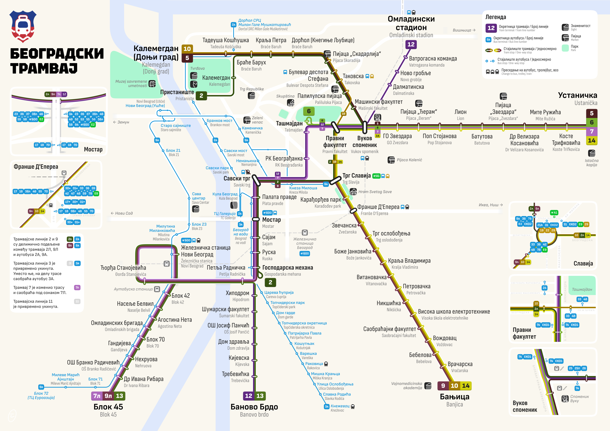
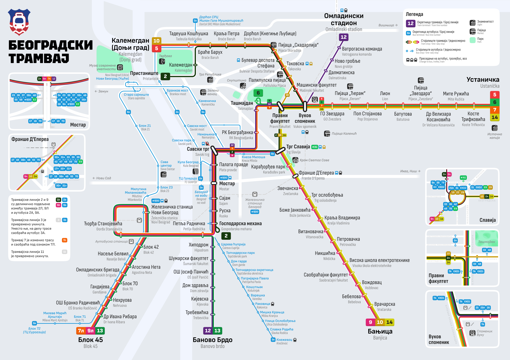
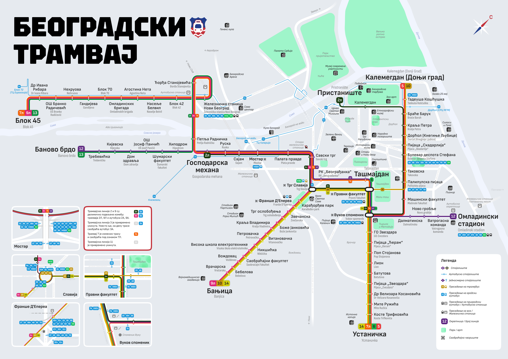

Belgrade Tram Map
Карта трамваев Белграда
A visual mapping project documenting the tram network in Belgrade, Serbia. This series explores the evolution and development of the tramway system through detailed cartographic representations.
Визуальный картографический проект, документирующий трамвайную сеть в Белграде, Сербия. Эта серия исследует эволюцию и развитие трамвайной системы через детальные картографические представления.
Map Iterations
Версии карты
Version from December 29
Версия от 29 декабря
Version from December 28
Версия от 28 декабря
Version from December 17
Версия от 17 декабря
Click on any map to view the full-size version.
Нажмите на любую карту, чтобы посмотреть её в полном размере.